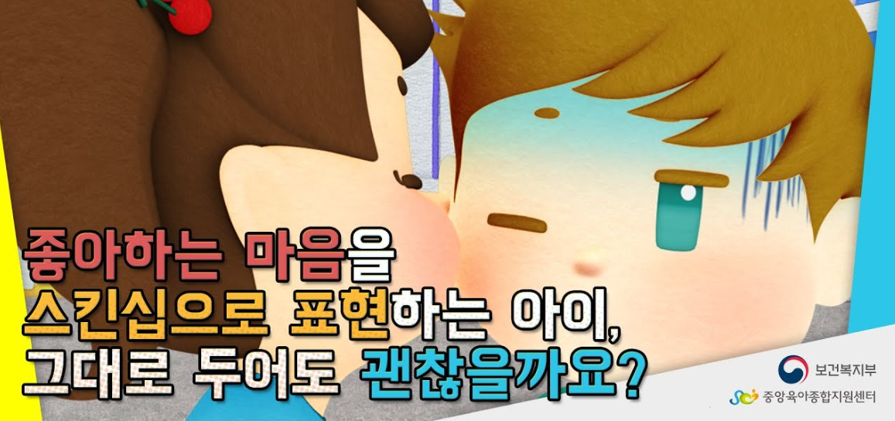
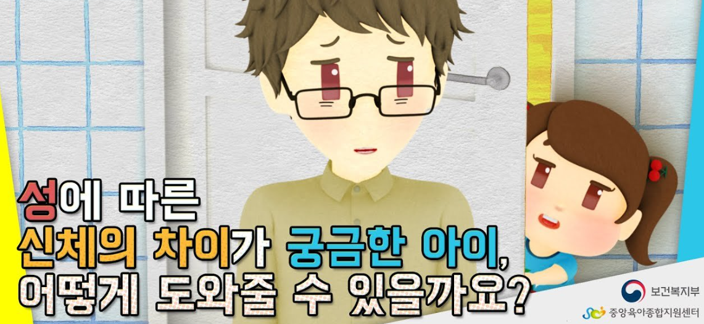
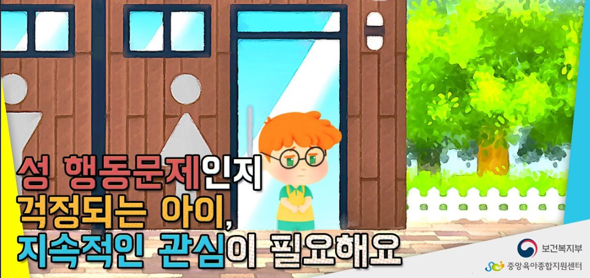

1. 성교육은 가정에서 부모가 먼저 해줘야 한다.
부모는 성에 대한 교육을 직장에서 들었거나 매스컴을 통해서 알고 있을 뿐 성을 자녀들에게 어떻게 가르쳐야 할지 난감해진다. 부모들이 말하는 성이란 ‘성=성행위’, ‘성교육=섹스교육’이라는 통념이 전부이라고 할 수 있다. ‘아기가 어떻게 생기냐’ ‘정자 난자가 어떻게 만나냐’ 하는 질문에 당황해한다. 아이는 어린이집에서 배웠거나 동화책에서 본 것에 대한 궁금했을 뿐인데 엄마, 아빠가 딴청하고 부끄러워하면 아이는 자신의 질문에 움칠해진다.
2. 스마트폰, 텔레비전, 유투브에서 접하는 성
아이들 손에 있는 스마트폰에서 우연히 야동에 접했거나 텔레비전에서 유난히 야하게 춤추는 모습 등 포르노 노출 시기는 점점 어린나이에 접하게 된다. 유초등 성 관련 분쟁이 급속히 늘어나 불안해진 부모들은 아이에게 알맞은 성 교육에 대하여 애매모호하면서 고민만 증가한다.

3. 성교육의 본질은 부모 그 자체이다.
가정은 자녀에게 성 교육을 할 수 있는 최초의 장소이며 부모가 가지고 있는 가치관과 태도는 자녀에게 기초적인 모델이다. 부부관계에 의한 자녀의 출생이 이루어진 것이며, 동시에 일상적인 생활습관을 통해 성에 관한 영향을 입힌다. 또한 자녀가 성장과 동시에 성 발달도 진행되고 수행해낼 수 있도록 부모의 역할이 중요하다. 그럼에도 부모의 성 교육이 잘 이뤄지지 않는 이유는 성에 대한 삶의 지혜가 아닌 지식으로 전달하려다 보니 부담을 느끼는 태도가 형성된다.

4. 자녀 성 교육에 대한 부정적인 영향을 걱정하는 점이다.
자녀의 성 교육을 가정이 아닌 교육 기관에서 담당해 주기를 기대한다. 실상 학교, 매스컴, 종교단체 등에서 계획된 성교육 프로그램은 가정 생활 속에서 학습한 성에 대한 메시지를 보충해 주는 역할에 불과하다. 아이가 부모의 그림자라는 것처럼 뒷모습을 보고 성장한다. 스폰지에 물이 스미듯 부모의 말과 행동은 아이에게 자연스럽게 흡수되는게 성이다. 부부 사이가 성을 어떻게 바라보고 살고 있는가, 어떤 관점을 갖고 부모역할을 하고 있는가, 어떤 태도를 갖고 자녀 성교육을 하고 있는가, 가족은 서로 사랑하며 행복하게 살아가고 있는가를 살펴봐야 할 것이다.

5. 성은 일상 생활이고 부모와 상호관계이다.
성 교육은 한번의 푸닥거리나 땜빵이 아니다. 성은 일상생활이고 부모와의 상호관계이다. 사람 사이 교류이며 소통이다. 사람을 어떻게 바라보는가, 어떻게 살 것인가 하는 태도이자 방향성이다. 그 사람의 인격이고 삶의 과정이다. 일상생활에서 아는 게 섹스고 떠오르는게 야동이면 난감하다. 부모의 성 태도, 성 인식, 성 행동은 아이와 함께 해야 한다. 부모가 성교육을 부담스러워하고 겁내면 아이도 불안을 느낀다. 엄마 아빠처럼 행복하게 즐겁게 살아야 겠다는 것이 곧 성 교육의 본질이다. 아이의 세계관을 밝고 당당해지는 자기주도성을 갖도록 부모도 지속적인 성 교육 업데이트가 있어야 성 정체성이 향상될 것이다.